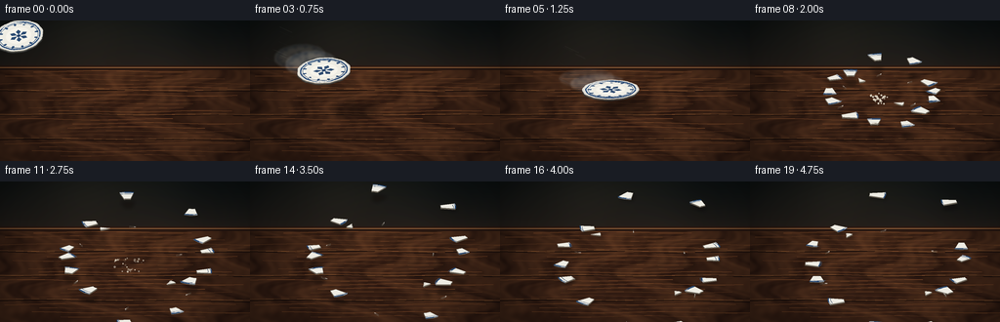
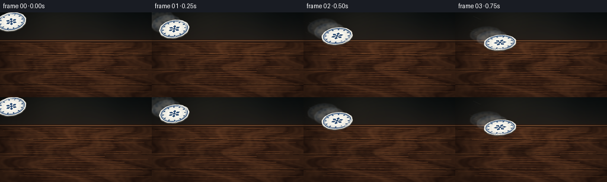

CODING AGENTS AS PIXEL WORLD MODELS
traex/DeepSeek-V4.1-Flash · phygen_135
点击播放 · 原生 RGB 像素
逐轮保存的候选
回放视频、检查图与代码变化。
每份候选均可单独播放。实际图片检查记录在下方工具轨迹中。
候选 01播放与检查图
点击播放 · 原生 RGB 像素


展开代码变化
--- 上一保存版本
+++ 本次保存版本
@@ -0,0 +1,802 @@
+"""Procedural RGB video: a porcelain plate shatters against a wooden table."""
+
+from __future__ import annotations
+
+import json
+import math
+from pathlib import Path
+
+import numpy as np
+from PIL import Image, ImageDraw, ImageFilter
+
+from artifact_io import save
+
+
+ROOT = Path(__file__).resolve().parent
+SPEC = json.loads((ROOT / "task_spec.json").read_text())
+W = int(SPEC["width"])
+H = int(SPEC["height"])
+N = int(SPEC["frames"])
+FPS = float(SPEC["fps"])
+
+# Render large, then downsample. This gives crisp silhouettes without giving up
+# the slightly handmade texture that suits the small RGB frame size.
+S = 4
+CW, CH = W * S, H * S
+IMPACT_FRAME = 6
+IMPACT = np.array([132.0, 79.5])
+RNG = np.random.default_rng(135)
+
+
+def rgb(color: tuple[int, int, int], alpha: int = 255) -> tuple[int, int, int, int]:
+ return (*color, alpha)
+
+
+def scaled_point(point: tuple[float, float]) -> tuple[int, int]:
+ return int(round(point[0] * S)), int(round(point[1] * S))
+
+
+def scaled_points(points) -> list[tuple[int, int]]:
+ return [scaled_point((float(x), float(y))) for x, y in points]
+
+
+def line_width(width: float) -> int:
+ return max(1, int(round(width * S)))
+
+
+def lerp(a: float, b: float, t: float) -> float:
+ return a + (b - a) * t
+
+
+def smoothstep(t: float) -> float:
+ t = max(0.0, min(1.0, t))
+ return t * t * (3.0 - 2.0 * t)
+
+
+def make_background() -> Image.Image:
+ """A quiet, warm room with a substantial walnut table in the foreground."""
+ yy, xx = np.mgrid[0:CH, 0:CW]
+ xn = xx / max(1, CW - 1)
+ yn = yy / max(1, CH - 1)
+
+ # Wall: charcoal green-brown, with a restrained pool of warm light.
+ wall_top = np.array([13.0, 19.0, 20.0])
+ wall_low = np.array([39.0, 32.0, 27.0])
+ wall_t = np.clip(yn / 0.38, 0.0, 1.0) ** 1.25
+ wall = wall_top[None, None, :] + (wall_low - wall_top)[None, None, :] * wall_t[:, :, None]
+ light = np.exp(-(((xn - 0.36) / 0.35) ** 2 + ((yn - 0.02) / 0.25) ** 2))
+ wall += light[:, :, None] * np.array([18.0, 13.0, 8.0])[None, None, :]
+ wall += (0.5 + 0.5 * np.sin(xx * 0.019 + 1.3))[:, :, None] * 1.4
+
+ # Tabletop plane, beginning just below the upper third of the image.
+ horizon = 48.0
+ table_t = np.clip((yy / S - horizon) / (H - horizon), 0.0, 1.0)
+ perspective = np.clip((yy / S - horizon) / (H - horizon), 0.0, 1.0)
+ phase = (
+ xx * 0.020
+ + 2.4 * np.sin(yy * 0.016 + xx * 0.0028)
+ + 1.2 * np.sin(yy * 0.048 - xx * 0.007)
+ )
+ grain = np.sin(phase) + 0.48 * np.sin(phase * 2.37 + 1.6) + 0.25 * np.sin(phase * 5.1)
+ fine = np.sin(xx * 0.13 + yy * 0.028) * np.sin(yy * 0.061 + 0.4)
+ knot1 = np.exp(-(((xx / S - 84) / 13) ** 2 + ((yy / S - 76) / 3.2) ** 2))
+ knot2 = np.exp(-(((xx / S - 201) / 19) ** 2 + ((yy / S - 119) / 5.0) ** 2))
+
+ base = np.array([67.0, 39.0, 25.0])
+ wood = (
+ base[None, None, :]
+ + grain[:, :, None] * np.array([11.5, 7.4, 4.2])[None, None, :]
+ + fine[:, :, None] * np.array([3.2, 2.4, 1.5])[None, None, :]
+ + (knot1 + 0.65 * knot2)[:, :, None] * np.array([13.0, 8.0, 3.2])[None, None, :]
+ )
+ # Broad varnish sheen, strongest near the back edge.
+ sheen = np.exp(-((perspective - 0.10) / 0.19) ** 2) * (
+ 0.55 + 0.45 * np.exp(-((xn - 0.54) / 0.42) ** 2)
+ )
+ wood += sheen[:, :, None] * np.array([13.0, 8.0, 4.0])[None, None, :]
+ # Distant tabletop darkens a little, making the impact area read forward.
+ wood *= (0.83 + 0.17 * perspective)[:, :, None]
+
+ table_mask = (yy / S >= horizon)[:, :, None]
+ image = np.where(table_mask, wood, wall)
+ image = np.clip(image, 0, 255)
+ pil = Image.fromarray(image.astype(np.uint8)).convert("RGBA")
+ draw = ImageDraw.Draw(pil, "RGBA")
+
+ # Table edge and a fine reflected highlight on the varnish.
+ draw.rectangle(
+ [0, int(horizon * S - 2 * S), CW, int(horizon * S + 2 * S)],
+ fill=rgb((45, 27, 19)),
+ )
+ draw.line(
+ [(0, int(horizon * S)), (CW, int(horizon * S))],
+ fill=rgb((145, 96, 58), 115),
+ width=line_width(1.0),
+ )
+ draw.line(
+ [(0, int((horizon + 2.2) * S)), (CW, int((horizon + 2.2) * S))],
+ fill=rgb((37, 22, 17), 185),
+ width=line_width(1.2),
+ )
+
+ # Plank seams, gently bowed by perspective.
+ for row, y0 in enumerate((72.0, 97.0, 122.0)):
+ points = []
+ for x in np.linspace(0, W, 33):
+ y = y0 + 0.55 * math.sin(x * 0.045 + row * 1.4) + (x - W / 2) * 0.003
+ points.append((x, y))
+ draw.line(
+ scaled_points(points),
+ fill=rgb((28, 16, 12), 155),
+ width=line_width(1.0),
+ )
+ draw.line(
+ scaled_points([(x, y - 1.1) for x, y in points]),
+ fill=rgb((139, 88, 49), 42),
+ width=line_width(0.55),
+ )
+
+ # A few long, low-contrast grain streaks.
+ for i in range(22):
+ y = 52 + i * 4.1
+ x0 = RNG.uniform(-15, 75)
+ x1 = RNG.uniform(165, 275)
+ pts = []
+ for x in np.linspace(x0, x1, 20):
+ gy = y + 0.75 * math.sin(x * 0.045 + i * 0.8)
+ pts.append((x, gy))
+ draw.line(
+ scaled_points(pts),
+ fill=rgb((116, 68, 38), int(RNG.uniform(18, 38))),
+ width=line_width(RNG.uniform(0.35, 0.8)),
+ )
+
+ # Vignette keeps attention on the collision.
+ vx = (xx / CW - 0.53) / 0.62
+ vy = (yy / CH - 0.51) / 0.72
+ vignette = np.clip(1.0 - 0.42 * (vx * vx + vy * vy), 0.52, 1.0)
+ arr = np.asarray(pil.convert("RGB"), dtype=np.float32) * vignette[:, :, None]
+ return Image.fromarray(np.clip(arr, 0, 255).astype(np.uint8)).convert("RGBA")
+
+
+BASE = make_background()
+
+
+def plate_basis(tilt_x: float, tilt_y: float, spin: float) -> np.ndarray:
+ """Projection of the plate plane into screen coordinates."""
+ cx, sx = math.cos(tilt_x), math.sin(tilt_x)
+ cy, sy = math.cos(tilt_y), math.sin(tilt_y)
+ cz, sz = math.cos(spin), math.sin(spin)
+ rz = np.array([[cz, -sz, 0.0], [sz, cz, 0.0], [0.0, 0.0, 1.0]])
+ rx = np.array([[1.0, 0.0, 0.0], [0.0, cx, -sx], [0.0, sx, cx]])
+ ry = np.array([[cy, 0.0, sy], [0.0, 1.0, 0.0], [-sy, 0.0, cy]])
+ rotation = ry @ rx @ rz
+ return rotation[:2, :2]
+
+
+def transformed_circle(
+ center: np.ndarray,
+ basis: np.ndarray,
+ radius: float,
+ scale: float,
+ count: int = 72,
+ scallop: float = 0.0,
+) -> np.ndarray:
+ angles = np.linspace(0.0, 2.0 * math.pi, count, endpoint=False)
+ radii = radius * (1.0 + scallop * np.cos(12.0 * angles))
+ local = np.stack([radii * np.cos(angles), radii * np.sin(angles)], axis=1)
+ return center[None, :] + scale * (local @ basis.T)
+
+
+def transformed_local(
+ center: np.ndarray, basis: np.ndarray, local_points, scale: float
+) -> np.ndarray:
+ local = np.asarray(local_points, dtype=np.float64)
+ return center[None, :] + scale * (local @ basis.T)
+
+
+def draw_plate(
+ center: tuple[float, float],
+ scale: float,
+ tilt_x: float,
+ tilt_y: float,
+ spin: float,
+ cracks: bool = False,
+) -> Image.Image:
+ """Draw the porcelain as a projected 3D disc with cobalt decoration."""
+ layer = Image.new("RGBA", (CW, CH), (0, 0, 0, 0))
+ draw = ImageDraw.Draw(layer, "RGBA")
+ c = np.array(center, dtype=np.float64)
+ basis = plate_basis(tilt_x, tilt_y, spin)
+ radius = 29.0 * scale
+
+ def pts(local):
+ return scaled_points(transformed_local(c, basis, local, 1.0))
+
+ outer = transformed_circle(c, basis, radius, 1.0, 96, scallop=0.011)
+
+ # A thin dark edge and offset underside give the plate visible thickness.
+ edge = outer + np.array([0.0, 1.8])
+ draw.polygon(scaled_points(edge), fill=rgb((108, 105, 96), 235))
+ draw.line(scaled_points(edge), fill=rgb((55, 57, 57), 210), width=line_width(1.0))
+
+ draw.polygon(
+ scaled_points(outer),
+ fill=rgb((229, 227, 218)),
+ outline=rgb((91, 91, 87), 235),
+ )
+ draw.line(
+ scaled_points(outer),
+ fill=rgb((248, 246, 237), 210),
+ width=line_width(0.8),
+ )
+
+ # Shallow concentric wells; slightly warmer near the center.
+ well = transformed_circle(c, basis, radius * 0.83, 1.0, 80)
+ draw.polygon(scaled_points(well), fill=rgb((242, 240, 231)))
+ inner = transformed_circle(c, basis, radius * 0.68, 1.0, 72)
+ draw.polygon(scaled_points(inner), fill=rgb((238, 236, 227)))
+ center_well = transformed_circle(c, basis, radius * 0.52, 1.0, 64)
+ draw.polygon(scaled_points(center_well), fill=rgb((247, 244, 235)))
+
+ # Cobalt rim and hairline gilded accent.
+ rim = transformed_circle(c, basis, radius * 0.885, 1.0, 96, scallop=0.006)
+ draw.line(
+ scaled_points(rim),
+ fill=rgb((37, 73, 120), 245),
+ width=line_width(1.35),
+ joint="curve",
+ )
+ accent = transformed_circle(c, basis, radius * 0.80, 1.0, 88)
+ draw.line(
+ scaled_points(accent),
+ fill=rgb((57, 91, 132), 205),
+ width=line_width(0.62),
+ joint="curve",
+ )
+
+ # Alternating cobalt leaves around the rim.
+ for i in range(12):
+ a = 2.0 * math.pi * i / 12.0
+ radial = np.array([math.cos(a), math.sin(a)])
+ tangent = np.array([-math.sin(a), math.cos(a)])
+ r0 = radius * 0.69
+ local = np.array(
+ [
+ radial * r0 + tangent * radius * 0.035,
+ radial * (r0 + radius * 0.105) + tangent * radius * 0.055,
+ radial * (r0 + radius * 0.155),
+ radial * (r0 + radius * 0.105) - tangent * radius * 0.055,
+ radial * r0 - tangent * radius * 0.035,
+ ]
+ )
+ draw.polygon(pts(local), fill=rgb((46, 82, 128), 222))
+
+ # Central rosette: six petals and a dark blue seed.
+ for i in range(6):
+ a = 2.0 * math.pi * i / 6.0 + 0.15
+ radial = np.array([math.cos(a), math.sin(a)])
+ tangent = np.array([-math.sin(a), math.cos(a)])
+ petal = np.array(
+ [
+ radial * radius * 0.08,
+ radial * radius * 0.27 + tangent * radius * 0.10,
+ radial * radius * 0.40,
+ radial * radius * 0.27 - tangent * radius * 0.10,
+ ]
+ )
+ draw.polygon(pts(petal), fill=rgb((43, 78, 122), 225))
+ dot = transformed_circle(c, basis, radius * 0.075, 1.0, 32)
+ draw.polygon(scaled_points(dot), fill=rgb((31, 63, 105), 245))
+
+ # A crisp crescent of window light on the upper-left face.
+ highlight = []
+ for a in np.linspace(math.radians(190), math.radians(286), 18):
+ rr = radius * (0.72 + 0.09 * math.sin((a - 3.3) * 2.0))
+ highlight.append((rr * math.cos(a) - 2.0, rr * math.sin(a) - 1.5))
+ draw.line(
+ pts(highlight),
+ fill=rgb((255, 254, 247), 225),
+ width=line_width(1.0),
+ joint="curve",
+ )
+
+ if cracks:
+ # Hairline fractures just before the plate gives way.
+ crack_center = c + np.array([1.5, 1.0])
+ crack_lines = [
+ [(0, 0), (-8, -8), (-15, -11), (-22, -10)],
+ [(0, 0), (7, -9), (13, -15), (18, -23)],
+ [(0, 0), (11, -2), (20, -1), (27, 2)],
+ [(0, 0), (8, 8), (14, 13), (19, 19)],
+ [(0, 0), (-7, 9), (-12, 16), (-15, 23)],
+ [(-5, -2), (-10, 2), (-18, 4)],
+ [(5, -3), (9, 4), (12, 9)],
+ ]
+ for crack in crack_lines:
+ p = crack_center[None, :] + np.asarray(crack, dtype=float)
+ draw.line(
+ scaled_points(p),
+ fill=rgb((62, 65, 63), 230),
+ width=line_width(0.75),
+ joint="curve",
+ )
+ for a in np.linspace(0, 2 * math.pi, 18, endpoint=False):
+ p = crack_center + np.array([math.cos(a), math.sin(a)]) * (12 + 8 * (0.5 + 0.5 * math.sin(a * 3)))
+ r = RNG.uniform(0.4, 1.0)
+ draw.ellipse(
+ [
+ int((p[0] - r) * S),
+ int((p[1] - r) * S),
+ int((p[0] + r) * S),
+ int((p[1] + r) * S),
+ ],
+ fill=rgb((255, 253, 244), 200),
+ )
+ return layer
+
+
+def with_opacity(layer: Image.Image, opacity: float) -> Image.Image:
+ out = layer.copy()
+ alpha = out.getchannel("A").point(lambda a: int(a * opacity))
+ out.putalpha(alpha)
+ return out
+
+
+def plate_pose(frame: int) -> tuple[np.ndarray, float, float, float, float]:
+ t = frame / float(IMPACT_FRAME)
+ if frame <= IMPACT_FRAME:
+ # Accelerating projectile path: fast horizontal travel and gravity.
+ center = np.array(
+ [
+ lerp(19.0, IMPACT[0], t),
+ 15.5 + 2.0 * frame + 1.05 * frame * frame,
+ ]
+ )
+ center[1] = lerp(15.5, IMPACT[1], t) + 3.5 * math.sin(math.pi * t)
+ scale = lerp(0.86, 1.0, smoothstep(t))
+ tilt_x = math.radians(lerp(51.0, 72.0, smoothstep(t)))
+ tilt_y = math.radians(lerp(-13.0, -3.0, smoothstep(t)))
+ spin = math.radians(lerp(8.0, 430.0, t))
+ else:
+ center = IMPACT.copy()
+ scale = 1.0
+ tilt_x = math.radians(72.0)
+ tilt_y = math.radians(-3.0)
+ spin = math.radians(430.0)
+ return center, scale, tilt_x, tilt_y, spin
+
+
+def draw_motion_trails(frame: int, layer: Image.Image) -> Image.Image:
+ if frame >= IMPACT_FRAME:
+ return layer
+ center, scale, tilt_x, tilt_y, spin = plate_pose(frame)
+ previous, _, _, _, previous_spin = plate_pose(max(0, frame - 1))
+ delta = center - previous
+ ghost_layer = Image.new("RGBA", (CW, CH), (0, 0, 0, 0))
+ for i, (distance, opacity) in enumerate(((1.30, 0.13), (0.72, 0.20))):
+ ghost_center = center - delta * distance
+ ghost = draw_plate(
+ tuple(ghost_center),
+ scale * (0.985 - 0.012 * i),
+ tilt_x,
+ tilt_y,
+ spin - 0.52 * (i + 1),
+ )
+ ghost = with_opacity(ghost, opacity)
+ ghost = ghost.filter(ImageFilter.GaussianBlur(1.2 * S))
+ ghost_layer = Image.alpha_composite(ghost_layer, ghost)
+ return Image.alpha_composite(layer, ghost_layer)
+
+
+def draw_flight_shadow(frame: int) -> Image.Image:
+ if frame > IMPACT_FRAME:
+ return Image.new("RGBA", (CW, CH), (0, 0, 0, 0))
+ center, scale, _, _, _ = plate_pose(frame)
+ t = frame / float(IMPACT_FRAME)
+ shadow = Image.new("RGBA", (CW, CH), (0, 0, 0, 0))
+ d = ImageDraw.Draw(shadow, "RGBA")
+ sx = lerp(83.0, IMPACT[0] + 2.0, smoothstep(t))
+ sy = lerp(97.0, IMPACT[1] + 7.0, smoothstep(t))
+ width = lerp(39.0, 57.0, t)
+ height = lerp(10.0, 19.0, t)
+ alpha = int(lerp(82, 130, t))
+ box = [
+ int((sx - width / 2) * S),
+ int((sy - height / 2) * S),
+ int((sx + width / 2) * S),
+ int((sy + height / 2) * S),
+ ]
+ d.ellipse(box, fill=rgb((17, 10, 7), alpha))
+ shadow = shadow.filter(ImageFilter.GaussianBlur(lerp(7.0, 2.4, t) * S))
+ return shadow
+
+
+def make_shards():
+ """Partition the disc into irregular body pieces and cobalt-edged rim shards."""
+ cuts = [0.0, 26.0, 57.0, 84.0, 112.0, 143.0, 171.0, 199.0, 226.0, 253.0, 281.0, 309.0, 337.0, 360.0]
+ shards = []
+ for i in range(len(cuts) - 1):
+ a0 = math.radians(cuts[i] + RNG.uniform(-2.2, 2.2))
+ a1 = math.radians(cuts[i + 1] + RNG.uniform(-2.2, 2.2))
+ outer = 29.0 * RNG.uniform(0.97, 1.02)
+ split = RNG.uniform(0.42, 0.57)
+ # Rim band first.
+ for band, (r0f, r1f) in enumerate(((split, 1.0), (0.0, split))):
+ if band == 1 and i % 2 == 0:
+ continue
+ r0 = outer * r0f
+ r1 = outer * r1f
+ n = 7 if band == 0 else 8
+ outer_arc = [
+ (r1 * math.cos(lerp(a0, a1, k / (n - 1))), r1 * math.sin(lerp(a0, a1, k / (n - 1))))
+ for k in range(n)
+ ]
+ if r0 <= 1e-5:
+ poly = outer_arc
+ outer_indices = []
+ else:
+ inner_arc = [
+ (r0 * math.cos(lerp(a1, a0, k / (n - 1))), r0 * math.sin(lerp(a1, a0, k / (n - 1))))
+ for k in range(n)
+ ]
+ poly = outer_arc + inner_arc
+ outer_indices = list(range(n))
+ arr = np.asarray(poly)
+ centroid = arr.mean(axis=0)
+ shards.append(
+ {
+ "poly": arr,
+ "centroid": centroid,
+ "outer_indices": outer_indices,
+ "rim": band == 0,
+ }
+ )
+ # Two small chips from the central basin.
+ for a0, a1 in ((0.5, 1.35), (3.8, 4.55)):
+ r = 10.0
+ poly = [(0.0, 0.0)]
+ for k in range(7):
+ a = lerp(a0, a1, k / 6)
+ poly.append((r * math.cos(a), r * math.sin(a)))
+ arr = np.asarray(poly)
+ shards.append(
+ {
+ "poly": arr,
+ "centroid": arr.mean(axis=0),
+ "outer_indices": [],
+ "rim": False,
+ }
+ )
+ return shards
+
+
+SHARDS = make_shards()
+
+
+def init_shards():
+ states = []
+ for i, shard in enumerate(SHARDS):
+ c = shard["centroid"]
+ radial = np.array([c[0], c[1] * 0.55])
+ norm = float(np.linalg.norm(radial))
+ if norm < 3.0:
+ angle = RNG.uniform(0, 2 * math.pi)
+ direction = np.array([math.cos(angle), math.sin(angle) * 0.65])
+ else:
+ direction = radial / norm
+ speed = RNG.uniform(36.0, 74.0) * (1.15 if shard["rim"] else 0.9)
+ # The incoming plate lends a slight rightward bias to the burst.
+ vx = direction[0] * speed + 14.0
+ vy = direction[1] * speed + RNG.uniform(2.0, 13.0)
+ states.append(
+ {
+ "x": IMPACT[0] + c[0] * 0.98,
+ "y": IMPACT[1] + c[1] * 0.38 + 4.5,
+ "h": RNG.uniform(0.3, 1.0),
+ "vx": vx,
+ "vy": vy,
+ "vh": RNG.uniform(22.0, 55.0),
+ "angle": 0.0,
+ "omega": RNG.uniform(-125.0, 125.0),
+ }
+ )
+ return states
+
+
+SHARD_STATES = init_shards()
+
+
+def step_shards(dt: float):
+ for state in SHARD_STATES:
+ state["x"] += state["vx"] * dt
+ state["y"] += state["vy"] * dt
+ state["h"] += state["vh"] * dt
+ state["vh"] -= 205.0 * dt
+ if state["h"] < 0.0:
+ state["h"] = 0.0
+ if state["vh"] < -4.0:
+ state["vh"] = -state["vh"] * 0.26
+ else:
+ state["vh"] = 0.0
+ state["vx"] *= 0.80
+ state["vy"] *= 0.80
+ drag = 1.2 if state["h"] > 0.1 else 2.7
+ state["vx"] *= math.exp(-drag * dt)
+ state["vy"] *= math.exp(-drag * dt)
+ state["angle"] += state["omega"] * dt
+ state["omega"] *= math.exp(-1.5 * dt)
+ state["y"] = min(state["y"], H - 3.0)
+
+
+def shard_screen_polygon(shard, state):
+ local = shard["poly"]
+ centroid = shard["centroid"]
+ ca, sa = math.cos(state["angle"]), math.sin(state["angle"])
+ rot = np.array([[ca, -sa], [sa, ca]])
+ local_rot = (local - centroid) @ rot.T + centroid
+ screen = np.empty_like(local_rot)
+ screen[:, 0] = state["x"] + local_rot[:, 0] * 1.0
+ screen[:, 1] = state["y"] + local_rot[:, 1] * 0.40 - state["h"]
+ return screen
+
+
+def draw_shards(objects: Image.Image, shadows: Image.Image):
+ od = ImageDraw.Draw(objects, "RGBA")
+ sd = ImageDraw.Draw(shadows, "RGBA")
+ for shard, state in zip(SHARDS, SHARD_STATES):
+ pts = shard_screen_polygon(shard, state)
+ # Ground shadow follows the tabletop, not the airborne height.
+ shadow_pts = pts.copy()
+ shadow_pts[:, 1] += state["h"] + 2.2
+ shadow_pts[:, 0] += 1.2
+ sd.polygon(scaled_points(shadow_pts), fill=rgb((18, 10, 7), 110))
+
+ dark = pts.copy()
+ dark[:, 1] += 1.1
+ od.polygon(scaled_points(dark), fill=rgb((109, 103, 91), 240))
+ face = (238, 236, 227) if shard["rim"] else (232, 230, 220)
+ od.polygon(
+ scaled_points(pts),
+ fill=rgb(face),
+ outline=rgb((116, 111, 101), 220),
+ )
+
+ if shard["rim"]:
+ idx = shard["outer_indices"]
+ if len(idx) > 1:
+ rim_pts = pts[idx]
+ od.line(
+ scaled_points(rim_pts),
+ fill=rgb((39, 75, 120), 245),
+ width=line_width(1.25),
+ joint="curve",
+ )
+ inner_rim = rim_pts.copy()
+ center = np.array([state["x"], state["y"] - state["h"]])
+ inner_rim = center + (inner_rim - center) * 0.88
+ od.line(
+ scaled_points(inner_rim),
+ fill=rgb((72, 102, 139), 190),
+ width=line_width(0.55),
+ joint="curve",
+ )
+
+ # Small bevel highlight on one edge of each fragment.
+ if len(pts) >= 3:
+ p0, p1 = pts[0], pts[min(2, len(pts) - 1)]
+ od.line(
+ [scaled_point(p0), scaled_point(p1)],
+ fill=rgb((255, 253, 246), 190),
+ width=line_width(0.65),
+ )
+
+
+def init_dust():
+ particles = []
+ for _ in range(34):
+ a = RNG.uniform(0, 2 * math.pi)
+ speed = RNG.uniform(8.0, 34.0)
+ particles.append(
+ {
+ "x": IMPACT[0] + RNG.uniform(-4, 4),
+ "y": IMPACT[1] + 5.0 + RNG.uniform(-2, 2),
+ "h": RNG.uniform(0.0, 2.0),
+ "vx": math.cos(a) * speed,
+ "vy": math.sin(a) * speed * 0.45,
+ "vh": RNG.uniform(5.0, 25.0),
+ "r": RNG.uniform(0.35, 1.1),
+ "life": RNG.uniform(0.65, 1.8),
+ }
+ )
+ return particles
+
+
+DUST = init_dust()
+
+
+def step_dust(dt: float):
+ for p in DUST:
+ p["x"] += p["vx"] * dt
+ p["y"] += p["vy"] * dt
+ p["h"] += p["vh"] * dt
+ p["vh"] -= 70.0 * dt
+ p["vx"] *= math.exp(-2.0 * dt)
+ p["vy"] *= math.exp(-2.0 * dt)
+ p["h"] = max(0.0, p["h"])
+ p["life"] -= dt
+
+
+def draw_dust(objects: Image.Image):
+ d = ImageDraw.Draw(objects, "RGBA")
+ for p in DUST:
+ if p["life"] <= 0:
+ continue
+ a = int(210 * min(1.0, p["life"] * 1.3))
+ x, y = p["x"], p["y"] - p["h"]
+ r = p["r"]
+ d.ellipse(
+ [int((x - r) * S), int((y - r) * S), int((x + r) * S), int((y + r) * S)],
+ fill=rgb((246, 240, 220), a),
+ )
+
+
+def impact_effects(frame: int) -> Image.Image:
+ layer = Image.new("RGBA", (CW, CH), (0, 0, 0, 0))
+ if frame < IMPACT_FRAME:
+ return layer
+ d = ImageDraw.Draw(layer, "RGBA")
+ age = (frame - IMPACT_FRAME) / FPS
+ contact = (IMPACT[0], IMPACT[1] + 7.0)
+ if frame == IMPACT_FRAME:
+ d.ellipse(
+ [
+ int((contact[0] - 13) * S),
+ int((contact[1] - 4) * S),
+ int((contact[0] + 13) * S),
+ int((contact[1] + 5) * S),
+ ],
+ fill=rgb((255, 245, 214), 150),
+ )
+ for a in np.linspace(0, 2 * math.pi, 16, endpoint=False):
+ r0, r1 = 6.0, 17.0 + 4.0 * (0.5 + 0.5 * math.sin(a * 4.0))
+ p0 = (contact[0] + math.cos(a) * r0, contact[1] + math.sin(a) * r0 * 0.5)
+ p1 = (contact[0] + math.cos(a) * r1, contact[1] + math.sin(a) * r1 * 0.5)
+ d.line(
+ [scaled_point(p0), scaled_point(p1)],
+ fill=rgb((255, 249, 229), 185),
+ width=line_width(0.7),
+ )
+ # A small cool reflected glint from the porcelain.
+ d.arc(
+ [
+ int((contact[0] - 29) * S),
+ int((contact[1] - 12) * S),
+ int((contact[0] + 29) * S),
+ int((contact[1] + 12) * S),
+ ],
+ 190,
+ 345,
+ fill=rgb((139, 187, 222), 150),
+ width=line_width(0.8),
+ )
+ else:
+ fade = max(0.0, 1.0 - age * 1.8)
+ if fade > 0:
+ d.ellipse(
+ [
+ int((contact[0] - (11 + age * 32)) * S),
+ int((contact[1] - (4 + age * 6)) * S),
+ int((contact[0] + (11 + age * 32)) * S),
+ int((contact[1] + (4 + age * 8)) * S),
+ ],
+ outline=rgb((238, 220, 178), int(85 * fade)),
+ width=line_width(0.7),
+ )
+ layer = layer.filter(ImageFilter.GaussianBlur(0.65 * S))
+ return layer
+
+
+def impact_flash(frame: int) -> Image.Image:
+ layer = Image.new("RGBA", (CW, CH), (0, 0, 0, 0))
+ if frame not in (IMPACT_FRAME, IMPACT_FRAME + 1):
+ return layer
+ strength = 0.30 if frame == IMPACT_FRAME else 0.10
+ yy, xx = np.mgrid[0:CH, 0:CW]
+ cx, cy = (IMPACT[0] + 2) * S, (IMPACT[1] + 3) * S
+ r2 = ((xx - cx) / (72 * S)) ** 2 + ((yy - cy) / (44 * S)) ** 2
+ glow = np.exp(-r2 * 2.2) * strength
+ arr = np.zeros((CH, CW, 4), dtype=np.uint8)
+ arr[:, :, 0] = 255
+ arr[:, :, 1] = 244
+ arr[:, :, 2] = 220
+ arr[:, :, 3] = np.clip(glow * 255, 0, 255).astype(np.uint8)
+ return Image.fromarray(arr, "RGBA")
+
+
+def draw_flight_speed_lines(frame: int) -> Image.Image:
+ layer = Image.new("RGBA", (CW, CH), (0, 0, 0, 0))
+ if frame >= IMPACT_FRAME:
+ return layer
+ center, scale, _, _, _ = plate_pose(frame)
+ d = ImageDraw.Draw(layer, "RGBA")
+ direction = np.array([1.0, 0.46])
+ direction /= np.linalg.norm(direction)
+ perpendicular = np.array([-direction[1], direction[0]])
+ for i in range(8):
+ offset = RNG.uniform(-22.0, 22.0)
+ back = RNG.uniform(34.0, 55.0)
+ length = RNG.uniform(8.0, 18.0)
+ p0 = center - direction * back + perpendicular * offset
+ p1 = p0 - direction * length
+ d.line(
+ [scaled_point(p0), scaled_point(p1)],
+ fill=rgb((222, 219, 207), int(RNG.uniform(20, 52))),
+ width=line_width(RNG.uniform(0.35, 0.75)),
+ )
+ return layer.filter(ImageFilter.GaussianBlur(0.35 * S))
+
+
+def render_frames() -> np.ndarray:
+ frames = []
+ for frame in range(N):
+ canvas = BASE.copy()
+
+ if frame == IMPACT_FRAME:
+ shadow = draw_flight_shadow(frame)
+ elif frame < IMPACT_FRAME:
+ shadow = draw_flight_shadow(frame)
+ else:
+ shadow = Image.new("RGBA", (CW, CH), (0, 0, 0, 0))
+
+ shard_shadows = Image.new("RGBA", (CW, CH), (0, 0, 0, 0))
+ if frame > IMPACT_FRAME:
+ # Objects are drawn after their shadows; use a temporary layer for
+ # the shard shadows so the soft blur does not soften the porcelain.
+ temp_objects = Image.new("RGBA", (CW, CH), (0, 0, 0, 0))
+ draw_shards(temp_objects, shard_shadows)
+ shard_shadows = shard_shadows.filter(ImageFilter.GaussianBlur(1.8 * S))
+
+ canvas = Image.alpha_composite(canvas, shadow)
+ canvas = Image.alpha_composite(canvas, shard_shadows)
+ canvas = Image.alpha_composite(canvas, draw_flight_speed_lines(frame))
+
+ objects = Image.new("RGBA", (CW, CH), (0, 0, 0, 0))
+ if frame <= IMPACT_FRAME:
+ objects = draw_motion_trails(frame, objects)
+ center, scale, tilt_x, tilt_y, spin = plate_pose(frame)
+ plate = draw_plate(
+ tuple(center),
+ scale,
+ tilt_x,
+ tilt_y,
+ spin,
+ cracks=(frame == IMPACT_FRAME),
+ )
+ objects = Image.alpha_composite(objects, plate)
+ else:
+ dummy_shadows = Image.new("RGBA", (CW, CH), (0, 0, 0, 0))
+ draw_shards(objects, dummy_shadows)
+ draw_dust(objects)
+
+ canvas = Image.alpha_composite(canvas, objects)
+ canvas = Image.alpha_composite(canvas, impact_effects(frame))
+ canvas = Image.alpha_composite(canvas, impact_flash(frame))
+
+ small = canvas.convert("RGB").resize((W, H), Image.Resampling.LANCZOS)
+ frames.append(np.asarray(small, dtype=np.uint8).copy())
+
+ if frame == IMPACT_FRAME:
+ # First post-impact motion begins after contact.
+ pass
+ elif frame > IMPACT_FRAME:
+ step_shards(1.0 / FPS)
+ step_dust(1.0 / FPS)
+
+ return np.stack(frames)
+
+
+if __name__ == "__main__":
+ video = render_frames()
+ save(video, ROOT)
+ print(f"saved {video.shape[0]} frames at {W}x{H}, {FPS:g} fps")
候选 02播放与检查图
点击播放 · 原生 RGB 像素

展开代码变化
--- 上一保存版本
+++ 本次保存版本
@@ -711,7 +711,7 @@
arr[:, :, 1] = 244
arr[:, :, 2] = 220
arr[:, :, 3] = np.clip(glow * 255, 0, 255).astype(np.uint8)
- return Image.fromarray(arr, "RGBA")
+ return Image.fromarray(arr)
def draw_flight_speed_lines(frame: int) -> Image.Image:
可观测工具轨迹
实际执行的命令与返回图片。
命令 1exit 0
/bin/bash -c "pwd && rg --files -g 'prompt.txt' -g 'GENERATION_RULES.md' -g 'task_spec.json' -g '"'!node_modules'"' -g '"'!vendor'"'"
命令 2exit 0
/bin/bash -c "find . -maxdepth 2 -type f -printf '%p\\n' | sort | head -200"
命令 3exit 0
/bin/bash -c 'git status --short --branch'
命令 4exit 0
/bin/bash -c 'cat GENERATION_RULES.md'
命令 5exit 0
/bin/bash -c 'cat prompt.txt'
命令 6exit 0
/bin/bash -c 'cat task_spec.json'
命令 7exit 0
/bin/bash -c "sed -n '1,260p' artifact_io.py && printf '\\n--- player ---\\n' && sed -n '1,240p' player_template.html"
命令 8exit 1
/bin/bash -c 'python generate.py'
命令 9exit 0
/bin/bash -c "rg -n \"rgb\\(\\(["'^)]*,[''^)]*,[''^)]*,[''^)]*'"\\)\\)\" generate.py"
命令 10exit 0
/bin/bash -c 'python generate.py'
命令 11exit 0
/bin/bash -c 'ls -lh generate.py task_spec.json prompt.txt pixels.npz inspection.png transition_check.png index.html frames/*.png | tail -30'
命令 12exit 0
/bin/bash -c 'command -v chafa || command -v viu || command -v jp2 || command -v img2txt || true'
命令 13exit 0
/bin/bash -c "python - <<'PY'
from PIL import Image
for name in ['inspection.png','transition_check.png','frames/00.png','frames/03.png','frames/06.png','frames/08.png','frames/12.png','frames/19.png']:
im=Image.open(name)
print(name, im.size, im.mode, im.getbbox())
PY"命令 14exit 0
/bin/bash -c "python - <<'PY'
from PIL import Image
import numpy as np
palette=np.array([
[25,22,19], # wall/dark -> space
[70,42,28], # wood -> .
[112,68,42], # bright wood -> :
[42,78,122], # cobalt -> B
[230,228,218],# porcelain -> #
[90,85,73], # dark porcelain/edge -> +
[12,8,6], # shadow -> ,
[250,245,225],# glint -> *
])
chars=' .:B#+ ,*'
for fi in [0,2,4,5,6,7,8,10,14,19]:
im=np.asarray(Image.open(f'frames/{fi:02d}.png').resize((64,36),Image.Resampling.BOX),dtype=float)
d=((im[:,:,None,:]-palette[None,None,:,:])**2).sum(3)
lab=d.argmin(2)
print(f'FRAME {fi:02d}')
for row in lab:
print(''.join(chars[i] for i in row))
print()
PY"命令 15exit 0
/bin/bash -c "python - <<'PY'
from PIL import Image
import numpy as np
for fi in [0,2,4,5,6,7,8,10,14,19]:
a=np.asarray(Image.open(f'frames/{fi:02d}.png')).astype(float)
r,g,b=a[:,:,0],a[:,:,1],a[:,:,2]
porcelain=(r>175)&(g>170)&(b>155)&(np.max(a,2)-np.min(a,2)<65)
cobalt=(b>r+15)&(b>g+5)&(b>50)
ys,xs=np.where(porcelain|cobalt)
if len(xs):
print(f'{fi:02d}: obj bbox=({xs.min()},{ys.min()})-({xs.max()},{ys.max()}) pixels={len(xs)} porcelain={porcelain.sum()} cobalt={cobalt.sum()} meanRGB={a[porcelain|cobalt].mean(0).round(1)}')
else:
print(fi,'no bright object')
PY"命令 16exit 0
/bin/bash -c 'python generate.py'
命令 17exit 1
/bin/bash -c "python - <<'PY'
import json, re, base64, hashlib
from pathlib import Path
import numpy as np
from PIL import Image
root=Path('.')
spec=json.loads((root/'task_spec.json').read_text())
npz=np.load(root/'pixels.npz')
pixels=npz['pixels']
assert pixels.shape == (spec['height'], spec['width'], spec['frames']), pixels.shape
assert pixels.dtype == np.uint32, pixels.dtype
frames=np.stack([np.asarray(Image.open(root/'frames'/f'{i:02d}.png')) for i in range(spec['frames'])])
assert frames.shape == (spec['frames'], spec['height'], spec['width'], 3), frames.shape
assert frames.dtype == np.uint8
unpacked=np.stack([(frames[i,:,:,0].astype(np.uint32)<<16)|(frames[i,:,:,1].astype(np.uint32)<<8)|frames[i,:,:,2] for i in range(spec['frames'])],axis=2)
assert np.array_equal(pixels, unpacked)
html=(root/'index.html').read_text()
m=re.search(r'const DATA=(\\{.*?\\}),W=DATA',html)
assert m
payload=json.loads(m.group(1).replace('\\\\u003c','<'))
assert (payload['width'],payload['height'],payload['frames'],payload['fps']) == (256,144,20,4.0)
def decode(s): return np.frombuffer(base64.b64decode(s),dtype='<u4').copy()
recon=[decode(payload['first'])]
for delta in payload['deltas']:
cur=recon[-1].copy(); p=decode(delta); i=0
while i < len(p):
start,count=int(p[i]),int(p[i+1]); i+=2
cur[start:start+count]=p[i:i+count]; i+=count
recon.append(cur)
recon=np.stack(recon,axis=1)
assert np.array_equal(recon,pixels), (recon.shape,pixels.shape)
assert payload['caption'].strip() == (root/'prompt.txt').read_text().strip()
# Basic temporal checks: no blank frames, impact causes substantial change.
means=frames.mean(axis=(1,2,3))
changes=np.abs(np.diff(frames.astype(np.int16),axis=0)).mean(axis=(1,2,3))
assert means.min()>20 and means.max()<235
print('contract: PASS')
print('frame means:', np.round(means,1).tolist())
print('mean abs frame changes:', np.round(changes,2).tolist())
print('impact delta:',round(float(changes[5]),2),'post-impact deltas:',np.round(changes[6:],1).tolist())
print('npz/html reconstruction: exact match')
print('files:', ', '.join(p.name for p in sorted(root.iterdir()) if p.is_file()))
PY"保存候选 2 份；完成命令 17 次；可验证图片返回 0 张。原始 API 响应与完整日志保留在本地。